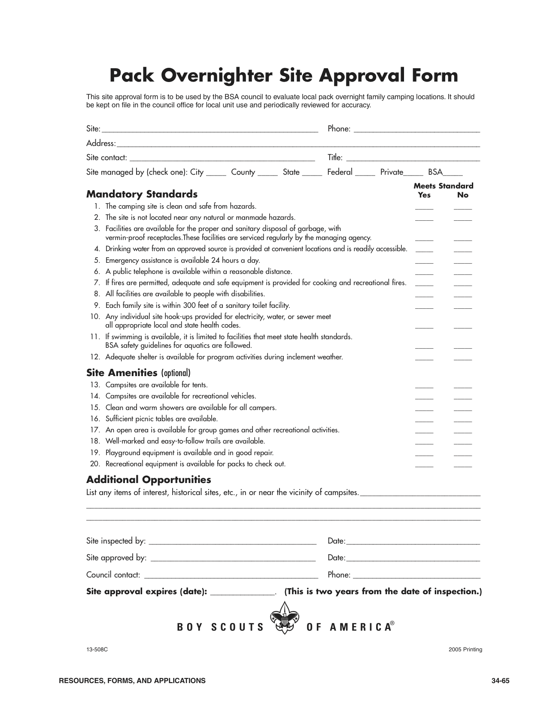

What first comes to mind when someone thinks of Scouting? The khaki uniform on some Scout out in the wilderness with a backpack. High adventure in the great outdoors is a big selling point for Scouts. How do we bring that same sense of adventure in the outdoors to the Cub Scout program, by going camping of course?
For a Cub Scout camping can be a fun way to learn about the outdoors. They can learn about plants and animals while having a great time hiking and fishing. They can learn to be good stewards of the environment by participating in conservation projects and clean ups while camping. Camping can also give them a chance to practice teamwork, leadership, and individual responsibility all in one fun filled weekend. So how does all this happen in a camping trip? Like everything else in Scouting planning and following the program.
There are multiple options for Cub Scout camping. These include day camps, resident camps, Webelos den overnight campouts and pack overnighters. Here we will consider the last two camping trips pack overnighters and Webelos den overnights.
The pack overnighter might be a Cub Scouts first overnight outdoor experience. The goal is to make this a positive experience for the Scout and the parent or guardian. A key to a successful Scouting career is an interest and enjoyment of the outdoors. A successful overnighter needs a location, activities, equipment, and food.
However, before we go into those details we need to talk about the National requirements. These can be found in the Guide to Safe Scouting, http://www.scouting.org/scoutsource/healthandsafety/gss.aspx. At that site there is an online version or a printable copy, it is also available for purchase at the Scout shop. Additional guidelines for planning a pack overnighter are found in Chapter 33 of the Cub Scout Leader Book. The first requirement is that one leader in charge of the overnight must complete Basic Adult Leader Outdoor Orientation (BALOO, No. 34162) prior to the pack overnighter and be on the campout. Second, once a location has been confirmed a Local Tour Permit is required for any locations other than council camps. And finally the location must meet certain standards (Pack Overnighter Site Approval Form, No. 13-508).
As previously noted the location must meet the standards of the Pack Overnight Site Approval Form, Appendix 1. Some Scout councils maintain a list of approved sites. As the inspections are only valid for two years it would be a good idea to update the inspection to make sure things have not changed.
In considering a location there are a number of considerations, travel time, the number of people expected, sleeping facilities and what kind of activities are available. The first two are pretty obvious. The third relates to the use of cabins or tents. If the numbers are not too large and you plan early it is possible to get cabin space for a large group of people. This will depend on acceptable sleeping arrangements. For example, some Scout camps have a large building that can house lots of people in a single room. Other camps may have multiple smaller cabins or a mix of cabins and tent sites. The last issue is perhaps the most important. Most camps will have open space for field games and Scout skills demonstrations. Some locations can offer fishing, swimming, or even things like indoor rock climbing. Think about your program and make sure the location meets your needs.
Appendix 2 lists some possible locations. More locations are available in the Where to Go Camping guide posted on the Order of the Arrow website. These locations are divided into three groups. The first group includes Scout camps such as Quail Hill Scout Reservation or Citta Scout Reservation. All of these camps run Cub Scout or Webelos resident camps so they should meet the requirements. The next group has one entry Monmouth County’s Turkey Swamp Park. In addition to the main park there is a group camping area at Nomoco. This park offers a wide variety of activities including hiking trails, biking trails, open fields, and playgrounds. There is also an orienteering course done as an Eagle Scout project from Troop 18, Freehold, NJ. Details can be found on the troop website.
The final group is state parks that provide group camping. More information can be obtained on the state’s website including other possible parks. Each park has different types of activities. For example, Allaire state park has a radio controlled model airplane club on site that is open to Scout visits. Stokes State Forest has extensive hiking trails and trout fishing.
Now that you have a location what are you going to do for the weekend? One issue is who is actually coming? Are sibling and other family members coming or just the Scouts and their parent or guardian? The following comments assume the latter. If you are starting on Saturday morning you have check in and set up. One thing you want to do during registration is review the medical forms for any allergies or special situations. While people are checking in you need to have some type of activity that does not require a lot of organization. One Cubmaster suggested a scavenger hunt. You might need to have different versions based on age.
After lunch its time for a short hike where the Scouts can continue to work on the scavenger hunt or work on finding specific signs in nature. After that it is probably time for a more organized activity. For example, you could set up a series of stations that feature Scout skills. They could be staffed by a combination of parents and den chiefs. You could even make it like a mini-Klondike and turn it into age appropriate competition. Later in the afternoon there may be time for fishing or some field games.
After dinner, it is time to get ready for the camp fire. Each den should have prepared a song or skit to present. Someone will need to build the fire. They should have been working on getting wood during the day. Make sure to check on the local rules for a fire and to have plenty of fire buckets nearby. After the camp fire the Scouts can do Smores or just go to bed. The parents can turn in or maybe have a cracker barrel.
After breakfast on Sunday morning and clean up its time for one more activity. This might be something related to rank advancements. Each group could work on one of the outdoor pins. Another option would be to have a presentation on Leave No Trace. After all these activities it is time to clean up and leave the area better than it was.
Having the right equipment will not make for a successful outing but the wrong equipment can ruin the experience. For this type of overnight there are four areas where the equipment will make a difference. The first is shelter. If you are not using cabins then some type of tent is necessary. The size of the tent does not matter as long as someone knows how to put it up. It would be a good idea to suggest that people set up their tent at home to make sure they have all the parts including pegs and ropes before they arrive.
The second item is sleeping gear. Sleeping bags and pads are nice but not everyone has them. If the weather is not going to be too cold you can get away with blankets and pillows. Make sure they bring something appropriate to sleep in. The third item is proper clothing for the weather. This includes clothing that is warm enough for both the day and the evening. Appropriate footwear is required if there is any hiking planned. And finally, never leave home without rain gear. Some type of waterproof jacket is much better than a poncho. A nice list of gear to bring for a pack overnighter can be found at http://www.scouting.org/filestore/pdf/34-49.pdf. One thing it is missing is a water bottle.
The last item is cooking equipment. Once you decide on the menu how are you going to cook it? Is each den going to bring their own cooking equipment or are you going to cook for the whole pack? Unless you are going to do a cold breakfast on Sunday you are probably going to need some type of griddle. For Saturday night you could barbeque. Check with the facility about the availability of grills in the site. Two other aspects of cooking are dishes and clean up. Will you bring paper plates and silverware for everyone or should they bring their own. And finally, you will have some dishes to wash. So you need to bring the classic three buckets for KP and a big pot to boil water as well as cleaning supplies.
Remember that if you don’t have the right equipment reach out to you local Scout troop to borrow it. Troops have tents they can lend and individual Scouts have cots and even extra sleeping bags. Worst case you can rent equipment from stores like EMS or REI. Finally, make sure you think about everything you need as you will probably not be able to run out and get it.
The final topic is what to eat. Before you consider the details review any allergy or dietary issues you might have in the pack. There are three meals that need to be planned; lunch, dinner and Sunday’s breakfast. You may also want to plan a snack after the camp fire. There are three ways to do lunch; bring it; cold, or hot. The easiest thing is for everyone to bring a bag lunch. The next easiest thing is to plan on a cold lunch. A simple menu of sandwiches set up as a buffet can work well. The key is to make sure that everyone understands how much to take. And finally a simple hot lunch can be done if the weekend is cool. A lunch of hot dogs and Raman noodles just requires two pots of boiling water.
The dinner menu will depend on how fancy you want to get and how many people are attending. A basic barbeque of burgers or grilled chicken with appropriate side dishes is not too hard to pull off. Another option would be to make it pot luck where each family brings a different dish. You could even make this into a diversity event if people bring foods from their cultures.
Breakfast on Sunday can be cold or hot. For a cold breakfast cereal or some type of pastry works well. You can get the individual boxes of cereal but they are expensive. A hot breakfast can be something simple like egg sandwiches. They have the advantage that they do not need any utensils. One constraint on a hot breakfast is the amount of griddle space you have. If you try to cook for 50 on a single Coleman stove someone’s food will get cold.
There are lots of resources for menu planning just think through your cooking equipment and how involved the Scouts will be. Remember to plan every last detail of what you need for both the food as well as the cooking equipment. For example, you might need salad dressing, spices, oil for frying, and garbage bags for clean up. The same goes for equipment. If you want coffee you need a pot or maybe just a pot of hot water and a ladle. What about things like hot gloves, tin foil, and water jugs.
Webelos den campouts provide a way to continue the exposure to the outdoors. For second year Webelos it is also a way to expose them to the kind of camping they can look forward to as Boy Scouts. The campout is run by a leader who has taken the Outdoor Leader Skills for Webelos training. The campout may be run jointly with a Boy Scout troop. However here we consider a Webelos only campout. On this campout every Webelo is accompanied by a parent or guardian.
The organization of a Webelos campout requires the same kind of planning as the pack overnighter; location, activities, equipment, and food. The key difference is in the kind of activities and the meals. The activities can focus more on Scout skills and perhaps something more physically challenging like a longer hike or conservation project. The food can also be more involved since you will be cooking for fewer people. Maybe it will be time for that Dutch oven cobbler or salmon on a cedar plank.
Examples of a Webelos campout at Quail Hill Scout Reservation and Forestburg Scout Reservation have been developed and can be found on the Monmouth Council Order of the Arrow Website. These two documents provide a complete plan for a weekend campout including activities and meals.
The key thing to remember for a successful Pack Overnighter or Webelos Den campout is to plan ahead. First plan the event as you would like it to happen. Then think about everything that can go wrong and plan for that. What will you do if it rains? What if someone gets lost, hurt, or just bored? Do you have all the equipment you need for the planned activities and for cooking? Have you talked to the camp ranger to make sure that everything you planned is ok with them or that they will have the equipment you expect? Remember the Scout motto “Be prepared”.
In the end no matter what happens remember that a Scout is cheerful. If you have the right attitude almost any situation can be dealt with. The important thing is that the Scouts have a positive experience.

Campsite |
Location |
Contact |
Quail Hill Scout Reservation |
Manalapan, NJ |
Monmouth Council |
Yards Creek Scout Reservation |
Blairstown, NJ |
Central NJ Council |
Citta Scout Reservation |
Barnegat, NJ |
Jersey Shore Council |
Camp Winnebago |
Rockaway, NJ |
Patriots Path Council, |
Turkey Swamp Park |
Freehold, NJ |
Monmouth County Parks |
Allaire State Park |
Farmingdale, NJ |
4265 Atlantic Ave. |
Cheesquake State Park |
Matawan, NJ |
300 Gordon Road |
Stokes State Forest |
Branchville, NJ |
1 Coursen Road |